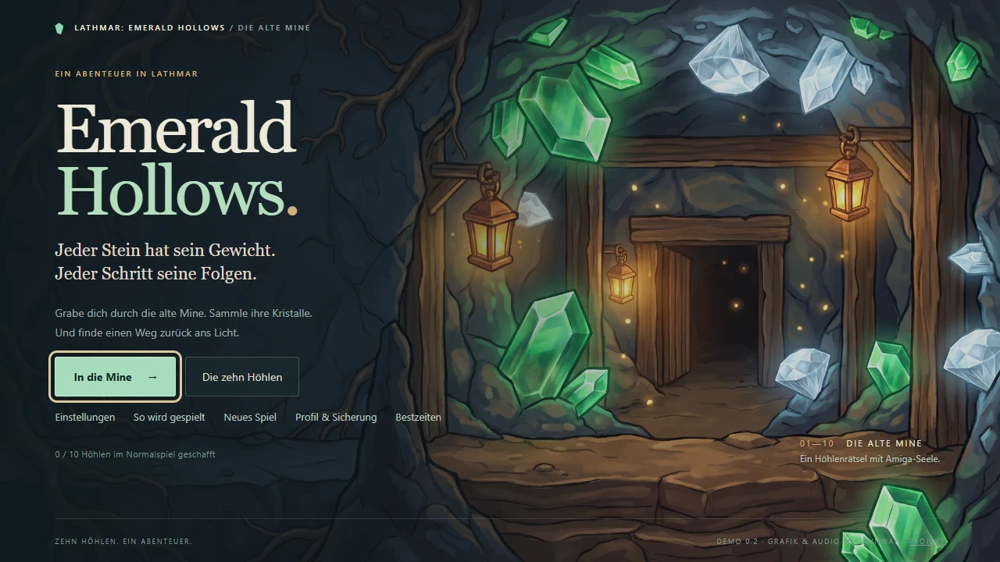

Cave action & puzzles
Lathmar: Emerald Hollows
Every stone has weight. Every step has consequences.
Explore fifty handcrafted caves across five chapters. Operate linked gates, guide beetles and diggers, and use keys and portals to find your way through the mine. The Silk Tunnels introduces spiders that hunt through connected webs. Rescue beetles from cocoons, find torches and choose which webs to burn. Warm painted artwork and an Amiga-inspired soundtrack accompany this standalone adventure in Lathmar.
Play with a keyboard or touch controls. Practice without a timer, save your progress, or create an optional nickname profile to compare verified best times and scores. Switch between English and German in the main menu or settings.
Free to play while in development.
Feedback appreciated.
Keyboard & mobile
- WASD / arrows
- Move; dig with the pickaxe
- Space + direction
- Use the equipped tool beside you
- E
- Switch pickaxe / torch
- R / Esc
- Restart / pause
- Home screen
- Install from your browser menu